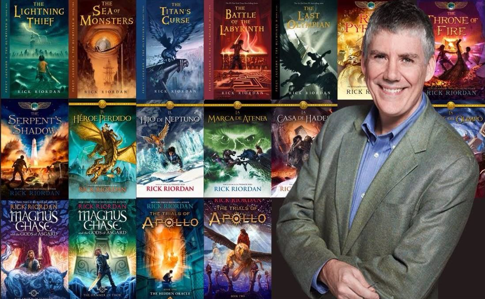

Rick Riordan là tác giả có sách bán chạy nhất do tờ New York Times bình chọn cho Series truyện dành cho trẻ em Percy Jackson và các vị thần Olympia và Series Tiểu thuyết trinh thám dành cho người lớn Tres Navarre. Ông có mười lăm năm giảng dạy môn tiếng Anh và lịch sử ở các trường trung học cơ sở công và tư ở San Francisco Bay Area ở California và ở Texas, từng nhận giải thưởng Giáo viên Ưu tú đầu tiên của trường vào năm 2002 do Saint Mary's Hall trao tặng. Ông hiện đang sống ở San Antonio, Texas cùng vợ và hai con trai, dành toàn bộ thời gian cho sáng tác.

.Series Percy Jackson và các vị thần trên đỉnh Olympus đã bán được hơn 20 triệu bản trên toàn thế giới (tính tới ngày 1.3.2011), chiếm 153 tuần trong danh sách Sách bán chạy nhất trên New York Times cho thể loại sách thiếu nhi. Bộ sách đã bán bản quyền cho hơn 40 nước. Kẻ cắp tia chớp đã đã được chuyển thể thành phim truyện nhựa cùng tên (đạo diễn: Chris Columbus, các diễn viên chính: Uma Thurman, Pierce Brosnan...) và video game.
PERCY JACKSON không mong đợi gì ở khóa học định hướng cho các học sinh mới vào trường Goode. Nhưng khi một người quen cũ bí ẩn xuất hiện ở trường, theo sau là các hoạt náo viên ma quỷ, mọi việc nhanh chóng trở nên xấu đi.
Trong cuốn sách thứ tư của bộ sách bán chạy nhất này, thời gian đang ngày càng ít đi khi cuộc chiến giữa các vị thần trên đỉnh Olympus và người đứng đầu các thần Titan-Kronos ngày càng gần kề. Ngay cả nơi ẩn náu an toàn ở Trại Con Lai cũng dễ dàng bị công kích vào bất cứ lúc nào khi quân đội của Kronos đang tìm cách đi xuyên qua ranh giới phép thuật của trại. Để ngăn chặn điều đó, Percy và các người bạn á thần phải lên đường thực hiện cuộc tìm kiếm xuyên qua Mê Cung - một thế giới ngầm đầy hỗn độn, mang đến cho họ những sự kinh ngạc đầy choáng váng ở mỗi góc rẽ.
Dọc đường đi Percy sẽ phải đương đầu với các kẻ thù đầy sức mạnh, khám phá ra sự thật về vị thần Pan đã mất tích, và đối mặt với bí mật kinh khủng nhất của người đứng đầu các thần Titan-Kronos. Cuộc chiến cuối cùng bắt đầu... với Cuộc chiến chốn Mê Cung đầy ly kỳ và hấp dẫn.